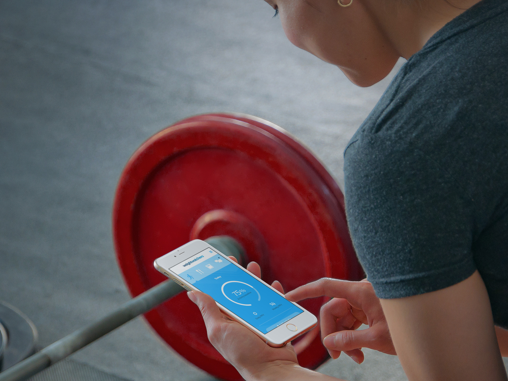
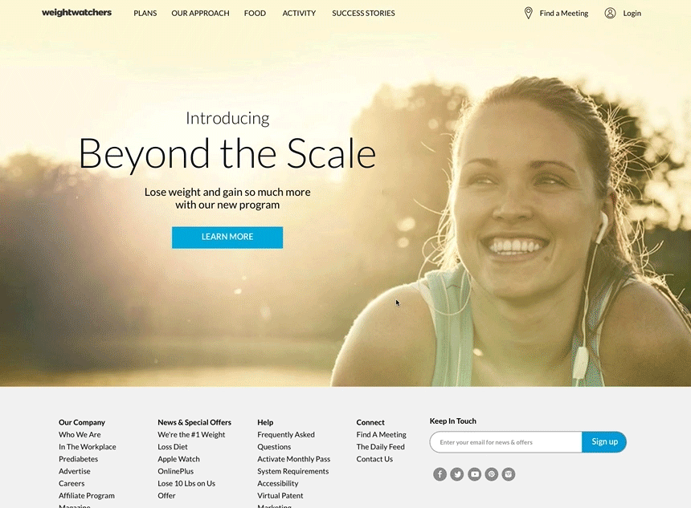
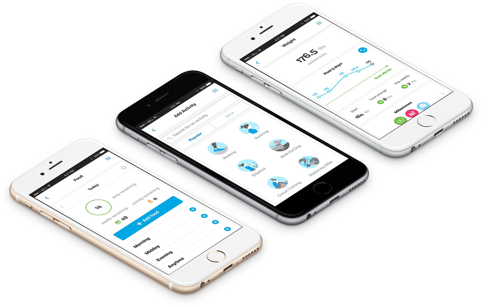
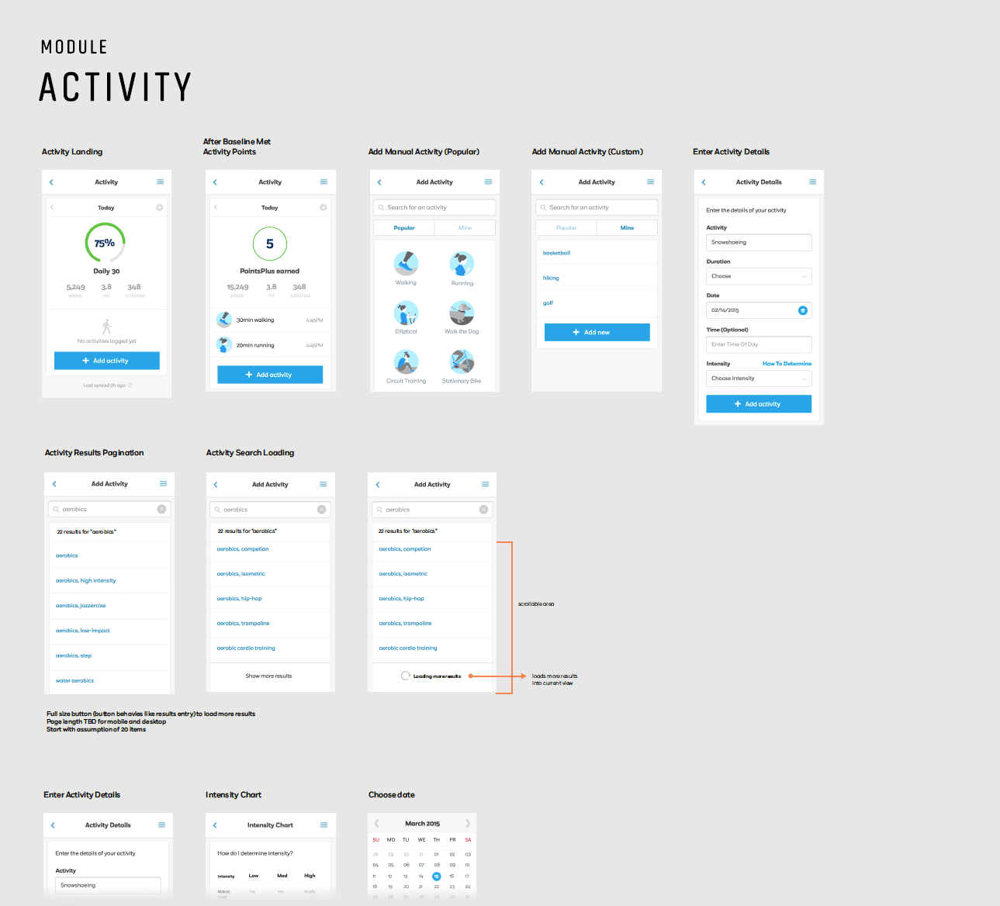
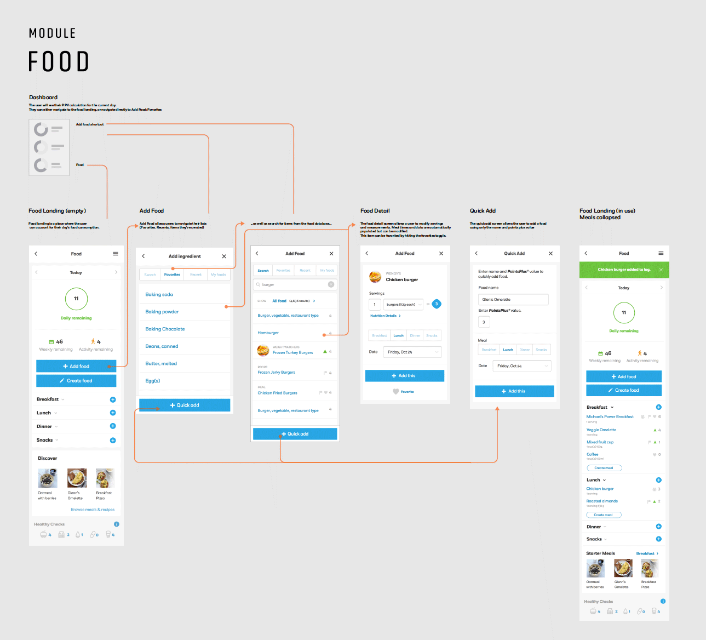
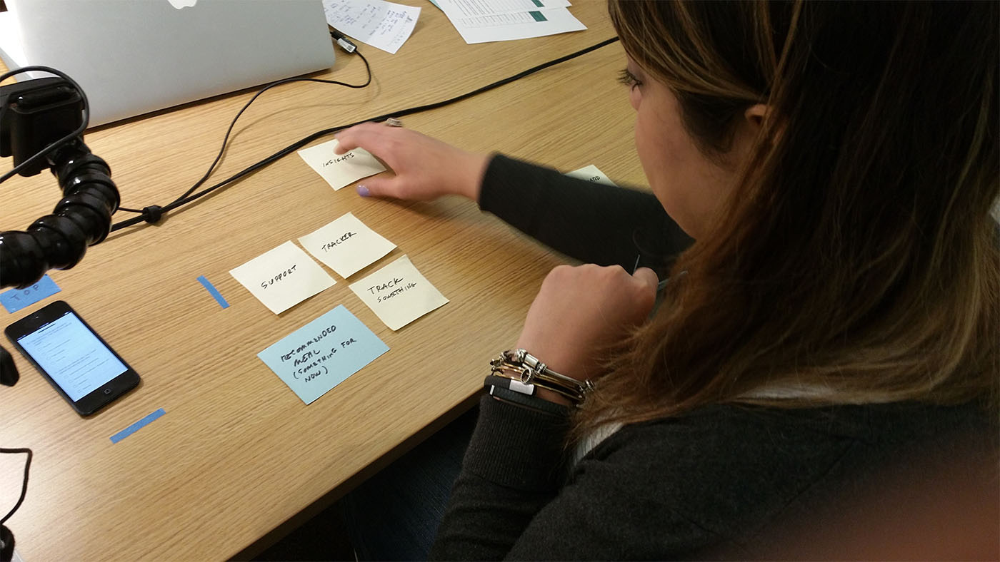

WeightWatchers: Elevating Member Outcomes Through Experience Design
Consumer App Design & Strategy

The Challenge
WeightWatchers faced a critical issue: members were leaving due to outdated digital tools.
The rise of competitors like Fitbit and MyFitnessPal highlighted the need for a modernized experience.
In-person meetings remained a strong feature,but the lack of digital integration left members searching for better solutions.This gap risked losing members who sought alternative apps and tools.
My Role
As Lead Experience Designer, I collaborated with cross-functional teams to deliver a seamless platform upgrade.
My focus included defining user flows, creating a cohesive design system, and ensuring feature alignment.I also developed detailed screen architecture diagrams to enhance team collaboration and clarity.Working closely with researchers and developers, I guided design decisions based on user feedback.
Development

Phase 0: Wearable activation prototype
Phase 0: Fitness Integration:We prioritized fitness tracker integration as the most pressing need. Members could now sync devices like Fitbit, eliminating app-switching.
The portal supported syncing and offered a dashboard displaying fitness data.Rewards like extra dietary allowances for high activity were added to boost engagement.

Introduction to core project phases: food, activity, and weight tracking
Phase 1: Fitness Tracking Features:We designed intuitive interfaces to ensure smooth device integration.Iterative testing helped refine usability for diverse member needs.

Phase 1: Fitness Tracking Features
Phase 2: Dietary Tracking Redesign:
Food tracking evolved with features like recipe management and favorites.
A health dashboard provided actionable insights into eating habits.The redesign ensured ease of use and integration with other app features.

Phase 2: Dietary Tracking Redesign
Phase 3: Social & Coaching Support:New features fostered stronger member connections and personalized support.Integrated coaching tools provided actionable advice and motivation.
Phase 3: Social & Coaching Support Features
Research & Empathy

User Research: In-person session at WeightWatchers lab
I immersed myself in the WeightWatchers ecosystem by becoming a member and testing competitor solutions.
This hands-on approach offered deep insights into user pain points.In-person and digital research sessions further refined our understanding of member needs.We used this feedback to prioritize features and improve usability.
Outcomes
The Beyond the Scale platform launched successfully, reinvigorating WeightWatchers' digital presence.
Engagement increased, and the organization regained competitive footing.High-profile partnerships, like Oprah's involvement, further bolstered brand visibility.This success allowed the company to focus on future innovations.
Development
Phase 0: Wearable activation prototype
Phase 0: Fitness Integration:We prioritized fitness tracker integration as the most pressing need. Members could now sync devices like Fitbit, eliminating app-switching.
The portal supported syncing and offered a dashboard displaying fitness data.Rewards like extra dietary allowances for high activity were added to boost engagement.
UI & Visual Design Exploration
Working with talented supporting UI and visual designers, we explored a wide range of options, from subtle refinements to bold reimaginings.
Some designs adhered to the existing WeightWatchers brand, while others ventured into entirely new territory.Ultimately, we implemented a simple and elegant style guide, designed for forwards compatibility with future applications.This foundational approach proved invaluable as it became the basis for WeightWatchers' next phase of digital work, ensuring consistency and scalability.
UI & Visual Design Exploration: Options developed for WeightWatchers' digital style guide
Phase 1: Fitness Tracking Features:We designed intuitive interfaces to ensure smooth device integration.Iterative testing helped refine usability for diverse member needs.